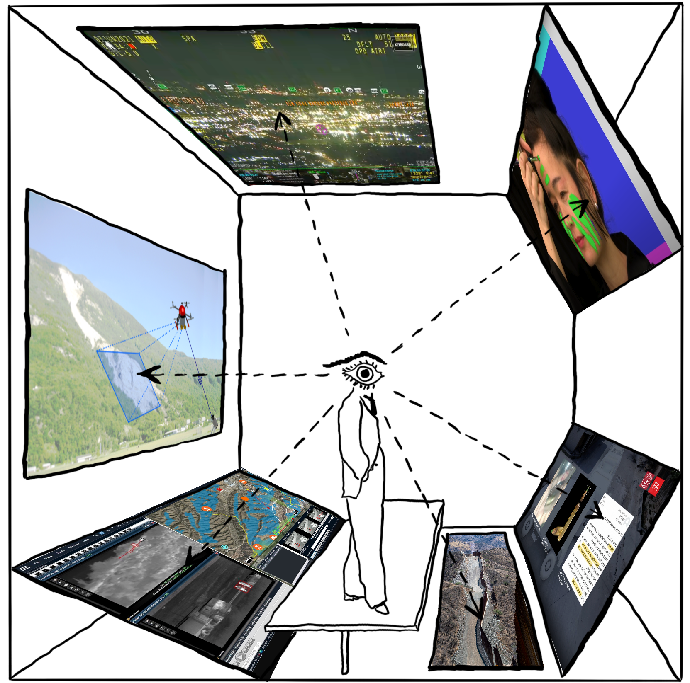

CONTEMPORARY LABORATORIES OF SURVEILLANCE
JAN 21-26, M/W/F, 7:00PM
a dinner seminar series exploring how surveillance practices emerge within contested sites and are assimilated into wider society
JAN 21 - laboratories of surveillance
The Most Surveilled Place in America
All Eyes on the Border
Occupation and Surveillance in Palestine and Kashmir: A Conversation
[Optional] The Palestine Laboratory: How Israel Exports the Technology of Occupation Around the World
[Optional] Hall Monitors
JAN 23 - expansion and culture of surveillance
Surveillance Culture: Engagement, Exposure, and Ethics in Digital Modernity
The Surveillant Assemblage
Luxury Surveillance
[Optional] Postscript on Societies of Control
[Optional] Black Data
[Optional] The Right to Look
JAN 25 - counter surveillance
How Not To Be Seen: A Fucking Didactic Educational .MOV File
The Zooms
White Collar Crime Risk Zones
Gold Mining and Violence in the Amazon Rainforest
Surveillance Locket
[Optional] How I Learned to Stop Worrying and Love Big Data
[Optional] Artist Stalks Himself So the FBI Doesn't Have to
[Optional] Papers, Please
additional sources on are.na
facilitated by kyle barnes and meher hans
